Comprehensive Eye Examination & Treatment
A complete assessment of vision and eye health, covering everything from refraction to the early signs of underlying conditions, with a treatment plan explained in plain terms.
Vision Field Eye Care Services brings comprehensive eye examinations, glaucoma screening, OCT scans and expert spectacle fitting to Enchi and the surrounding Western North Region — in a calm, modern clinic built around your sight.
Vision Field Eye Care Services was set up to bring genuinely thorough, unhurried eye care to Enchi and its surrounding communities — real diagnostic equipment, plain-language explanations, and enough time spent to actually understand your eyes, not just test them.
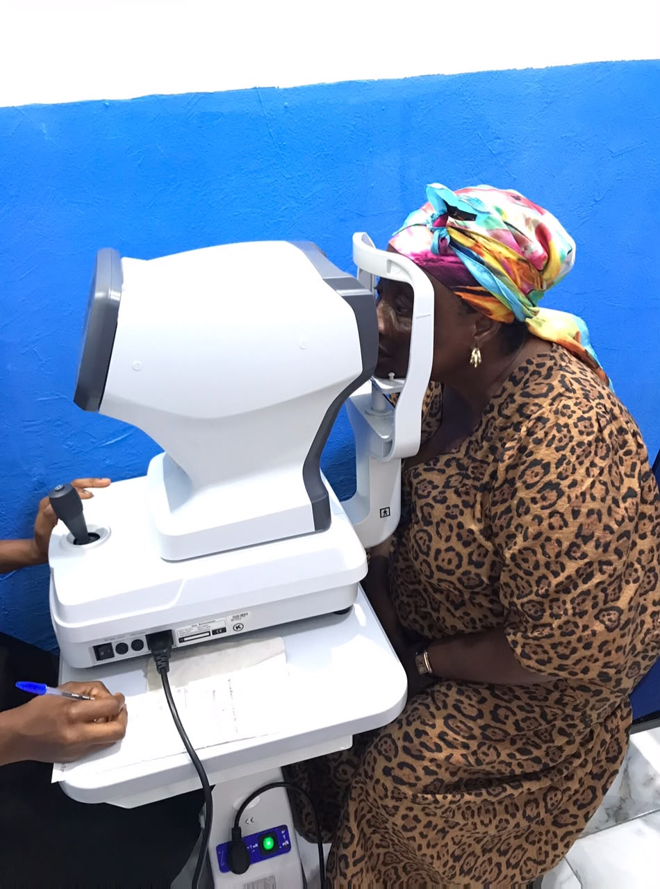
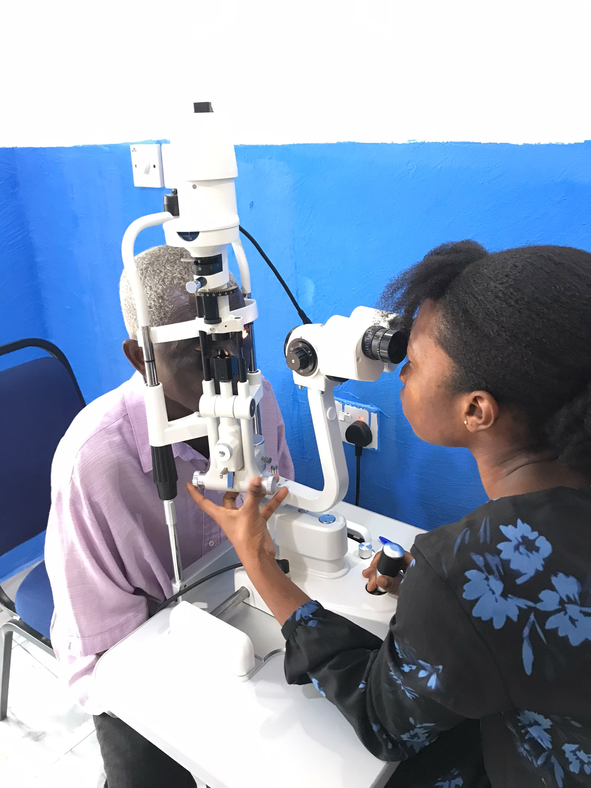
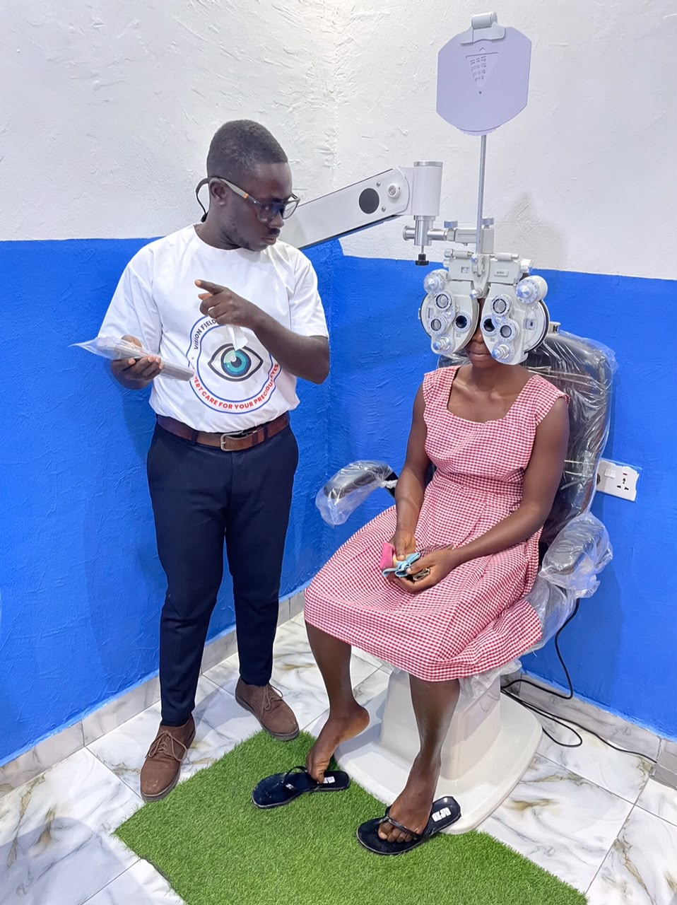
Every visit covers vision, eye pressure and overall eye health, not just a quick chart reading.
Refraction, phoropter and OCT scanning equipment kept ready for accurate, comfortable testing.
Findings and next steps are explained clearly, so every patient leaves understanding their own eyes.
Five core services, delivered with the same attention whether it is a first-time exam or ongoing management of an eye condition.
A complete assessment of vision and eye health, covering everything from refraction to the early signs of underlying conditions, with a treatment plan explained in plain terms.
Eye-pressure checks and ongoing monitoring to catch glaucoma early and manage it over time.
Precise refraction and a fitting process that ends with spectacles measured and adjusted for your face.
Practical guidance on protecting your sight day to day, at home, at work and as you age.
Optical Coherence Tomography imaging for a detailed, layer-by-layer view of the retina and optic nerve.
Optical Coherence Tomography lets us see beyond the surface of the eye — a cross-section of the retina and optic nerve that supports earlier, more confident diagnosis. Here's what an OCT visit involves:
A quick, painless scan captures cross-sectional images of the retina and optic nerve.
The scan is rendered into a detailed, layer-by-layer view a standard exam can't show.
Your results are reviewed with you in plain language, with a clear next step if one is needed.
Every appointment is treated as more than a quick check — it is time set aside to properly understand your vision and act on it.
Enough time is set aside for every exam so nothing about your vision is rushed or assumed.
You leave knowing what was found, why it matters, and what — if anything — happens next.
From first childhood check-ups to ongoing care for glaucoma and age-related change.
Based on the Enchi–Yakasi road, easy to reach for patients across the Western North Region.
A look at the consultation rooms, equipment and dispensing area at Vision Field.
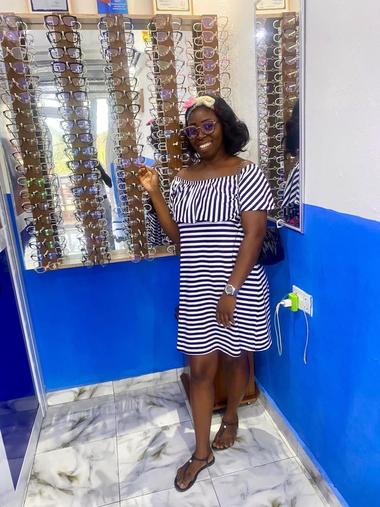
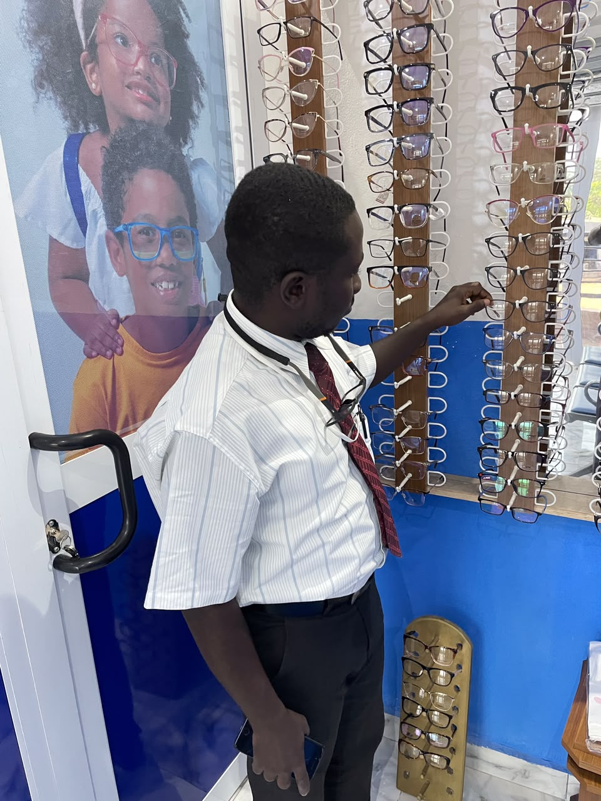
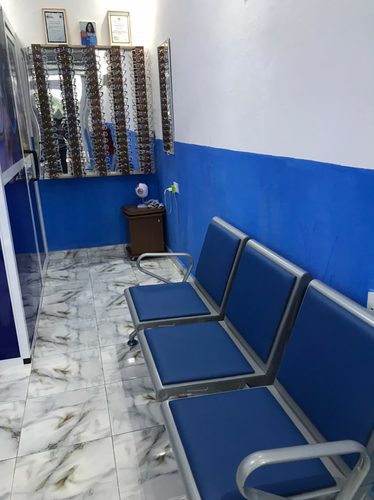
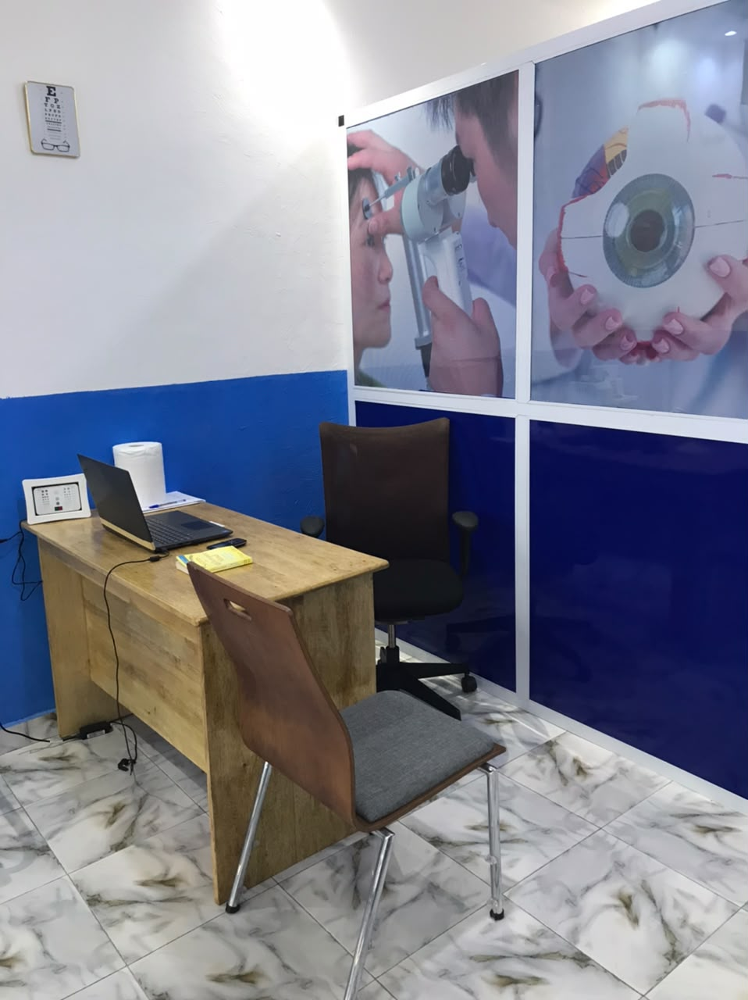
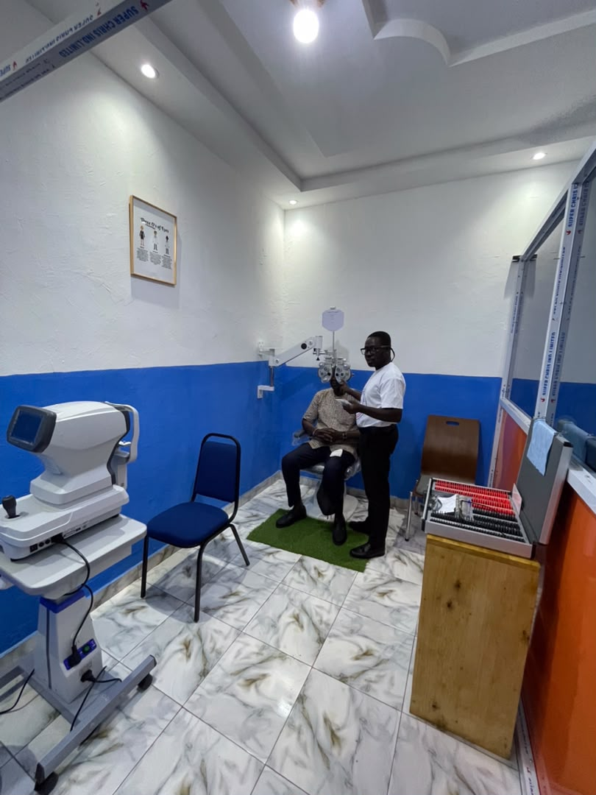
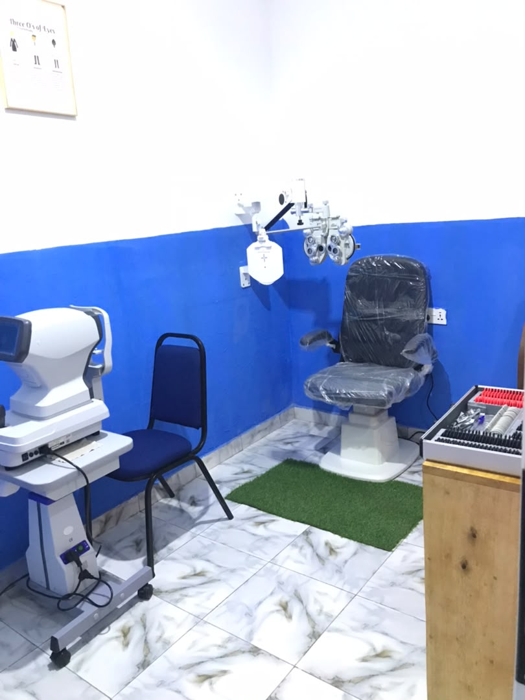
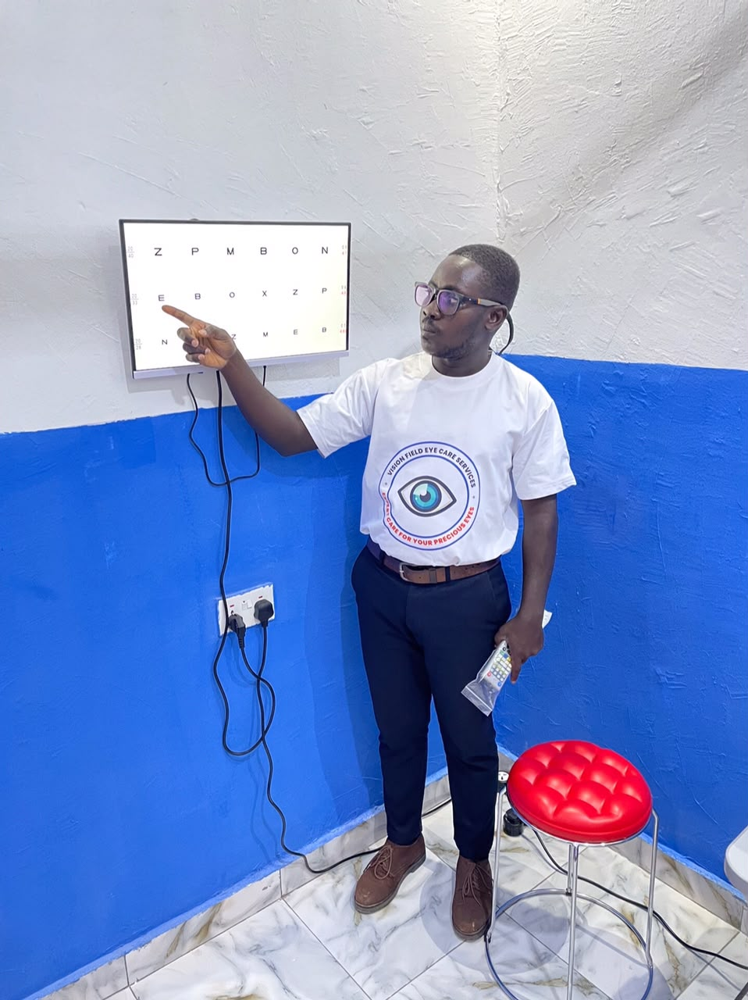
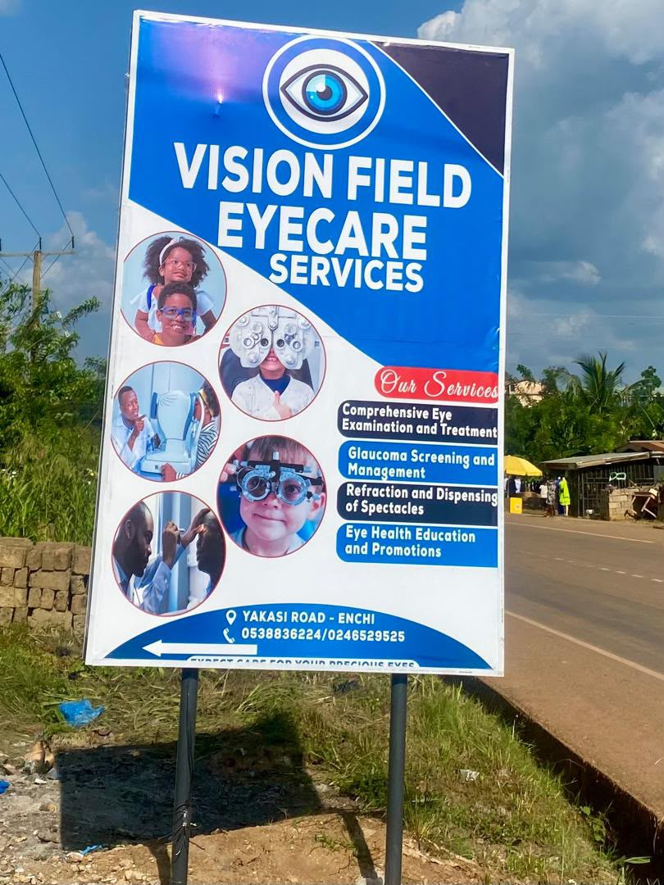
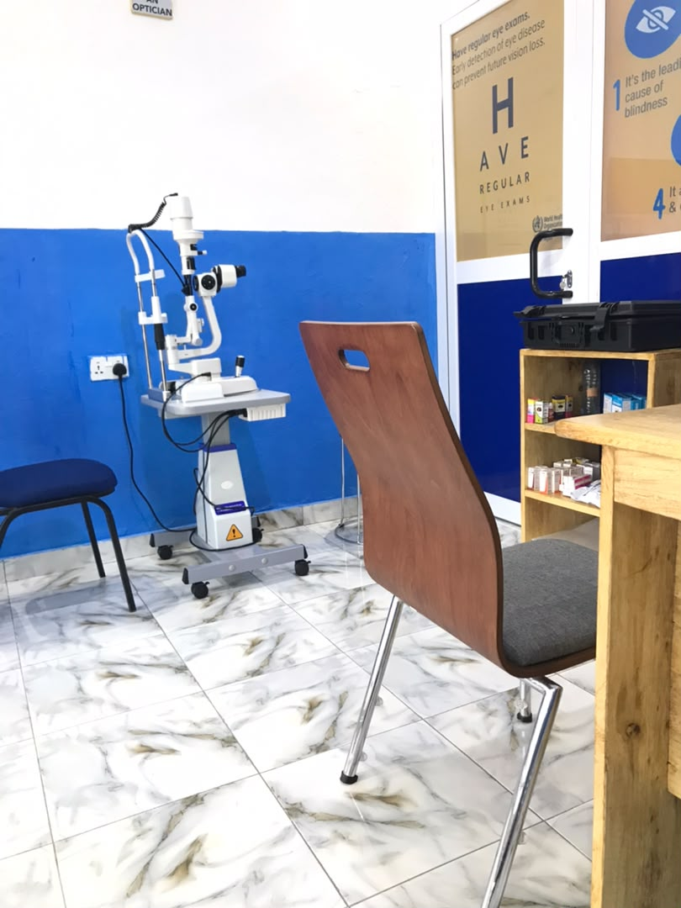
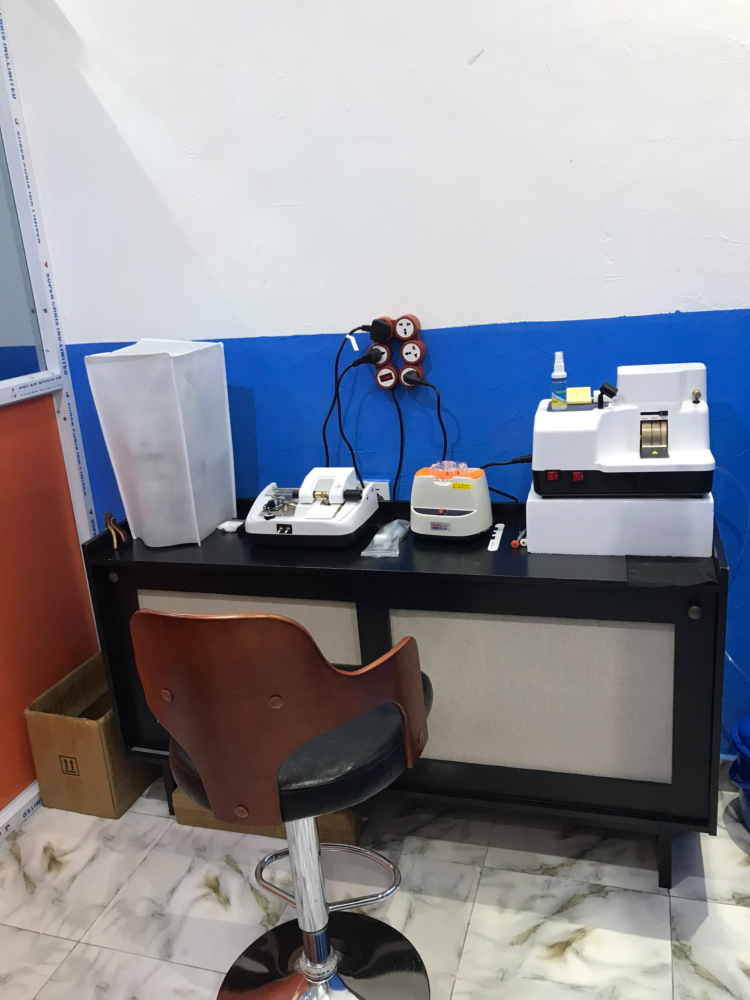
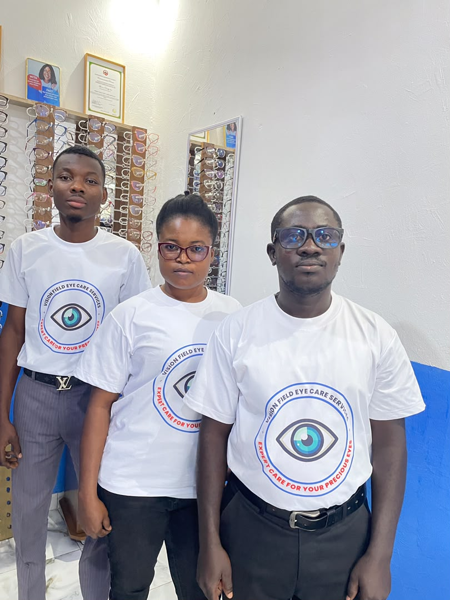
Located on the Enchi – Yakasi road, right by Prince Mark Cold Store — easy to find, easy to reach.
Enchi – Yakasi Road, @ Prince Mark Cold Store, Western North Region, Ghana
Digital address: YA-00041-6541
| Monday – Friday | 7:30 am – 4:30 pm |
| Public holidays | 8:30 am – 3:00 pm |
| Saturday & Sunday | Closed |
Call, WhatsApp, or walk in during opening hours — the team at Vision Field is ready to see you.